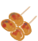
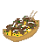

黒菜んダッシュ💨
コミック「ねこむすめ道草日記」の同人ゲームです。
簡易操作説明
キーボード
- Space: 決定、一時停止、再開
- 矢印: キャラクター選択、上下のレーン移動
- A: 攻撃（ゲーム画面のみ）
- S: スペシャル技（ゲーム画面のみでテンションMax時のみ）
マウス
- 左クリック: キャラクター選択、決定、レーン移動、ボタン選択
タッチ
- タッチでキャラクター選択したり画面上のボタン押したりできます。
食べ物

おにぎりです。食べるとわずかにスタミナが回復します。
焼きまんじゅうです。食べるとスタミナが少し回復して、テンションがわずかに増えます。
伊香理焼きです。食べるとスタミナが大きく回復して、テンションが少し増えます。
障害物

普通の岩です。行く手を阻む障害物で、当たるとキャラクターは歩いてしまい速度が遅くなります。当たる前に攻撃して壊しましょう。